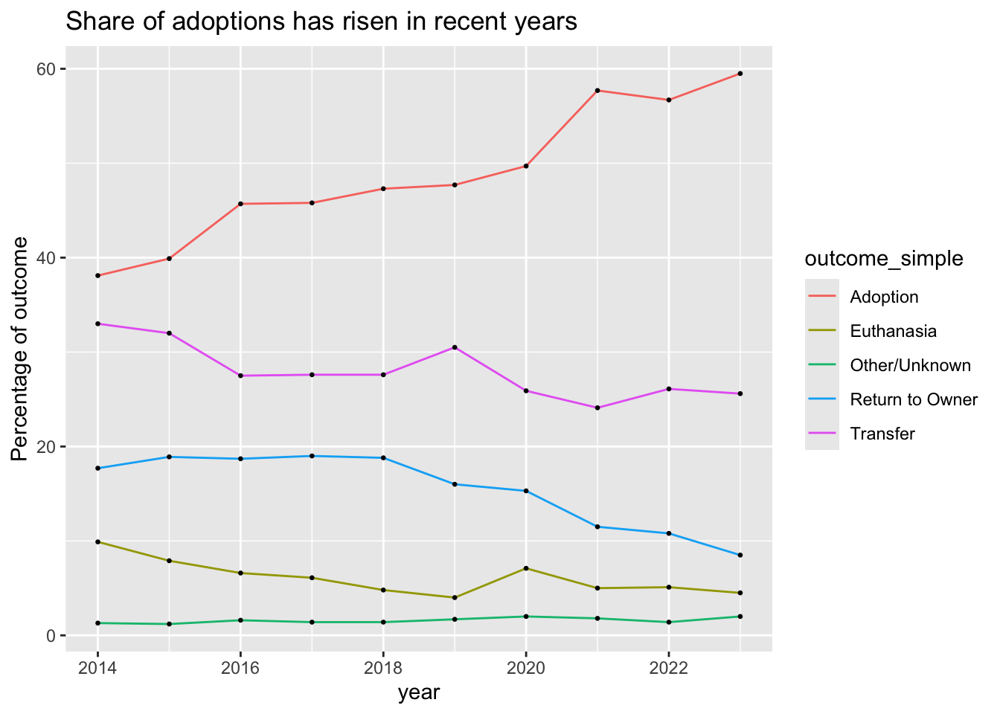

library(tidyverse)
library(janitor)Appendix H — Tabyls
A quickie draft chapter showing the beauties of the tabyl() function from the janitor package.
H.1 Import my data
We’re using some animal center data to show these functions and we need some data I do a little cleanup for simplification.
outcomes <- read_rds("data-processed/01-outcome.rds") |>
filter(year > 2013, year < 2024) |>
mutate(date_outcome = date(date_outcome))
outcomes |> glimpse()Rows: 153,840
Columns: 12
$ animal_id <chr> "A794011", "A776359", "A821648", "A720371", "A674754"…
$ date_outcome <date> 2019-05-08, 2018-07-18, 2020-08-16, 2016-02-13, 2014…
$ date_birth <date> 2017-05-02, 2017-07-12, 2019-08-16, 2015-10-08, 2014…
$ age_days <drtn> 736 days, 371 days, 366 days, 128 days, 6 days, 2752…
$ animal_type <chr> "Cat", "Dog", "Other", "Dog", "Cat", "Dog", "Dog", "C…
$ outcome_type <chr> "Rto-Adopt", "Adoption", "Euthanasia", "Adoption", "T…
$ outcome_simple <chr> "Return to Owner", "Adoption", "Euthanasia", "Adoptio…
$ outcome_subtype <chr> NA, NA, NA, NA, "Partner", NA, "Foster", NA, NA, NA, …
$ sex_upon_outcome <chr> "Neutered Male", "Neutered Male", "Unknown", "Neutere…
$ breed <chr> "Domestic Shorthair Mix", "Chihuahua Shorthair Mix", …
$ name <chr> "Chunk", "Gizmo", NA, "Moose", NA, "Princess", "Quent…
$ year <dbl> 2019, 2018, 2020, 2016, 2014, 2020, 2020, 2022, 2014,…Peek at the data in a way that shows outcome_simple
outcomes |>
slice_sample(n = 5) |>
select(animal_id, date_outcome, outcome_type, outcome_simple, everything())H.2 Let’s count outcomes
This is the shortcut count() which is super useful. It is the same and group_by |> summarize(n()).
outcomes |>
count(outcome_simple)H.3 The beauty of tabyl
tabyl() works like count, but it also adds the percentage share by default. While the result looks physically different in your notebook than our tidyverse outputs, it is still a data frame that works in similar ways, as it can be piped, etc.
outcomes |>
tabyl(outcome_simple)That said, there are a number of additional “adorn” functions that can help format your result.
Here we convert percent to an actual percentage (the * 100 part):
outcomes |>
tabyl(outcome_simple) |>
adorn_pct_formatting()And then we remove the percent sign:
outcomes |>
tabyl(outcome_simple) |>
adorn_pct_formatting(affix_sign = F)But do not that percent column is a parse_number() or as.number().
H.4 Two-way tables
You can group by more than one value. We’ll use a two-way table to get outcomes by year.
Two-way tables don’t automatically add percentages:
outcomes |>
tabyl(year, outcome_simple)But you can still convert them with an adorn function:
outcomes |>
tabyl(year, outcome_simple) |>
adorn_percentages()And even convert them to whole percentages:
outcome_prcentages <- outcomes |>
tabyl(year, outcome_simple) |>
adorn_percentages() |>
adorn_pct_formatting(affix_sign = TRUE) # change to FALSE to remove %
outcome_prcentagesAnd then pivot them to prepare for a plot. The value (prc here) ends up as text (even if you remove the % sign) so you have to convert them to a number before they are useful in plotting.
out_prc_long <- outcome_prcentages |>
pivot_longer(
cols = Adoption:Transfer,
names_to = "outcome_simple",
values_to = "prc"
) |>
mutate(prc = parse_number(prc))
out_prc_longNow you can plot it:
out_prc_long |>
ggplot(aes(x = year, y = prc, group = outcome_simple)) +
geom_line(aes(color = outcome_simple)) +
geom_point(size = .5) +
labs(
title = "Share of adoptions has risen in recent years",
y = "Percentage of outcome"
)
H.5 Add row totals
One last thing … we’ll check our math on these percentage and how totals while we are at it.
Let’s filter for just the 2023 values:
out_prc_long |>
filter(year == 2023)But then add adorn_totals() to add together the prc to make sure they equal 100. It’s a wee bit off because of rounding.
out_prc_long |>
filter(year == 2023) |>
adorn_totals()While it adds totals to columns by default, you can also specify both rows and columns, as necessary.
outcomes |>
tabyl(year, outcome_simple) |>
adorn_totals(c("row", "col"))